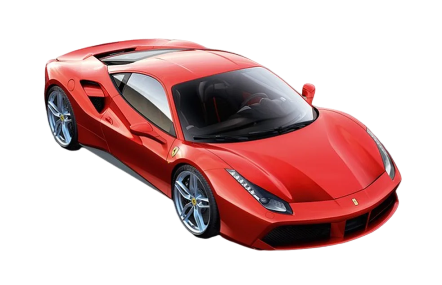
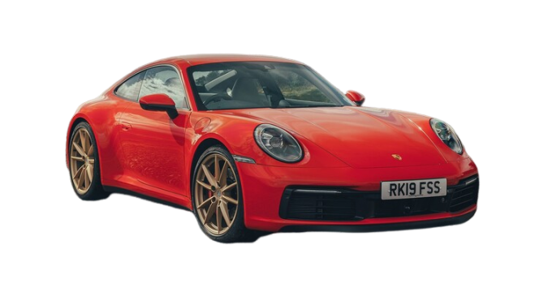
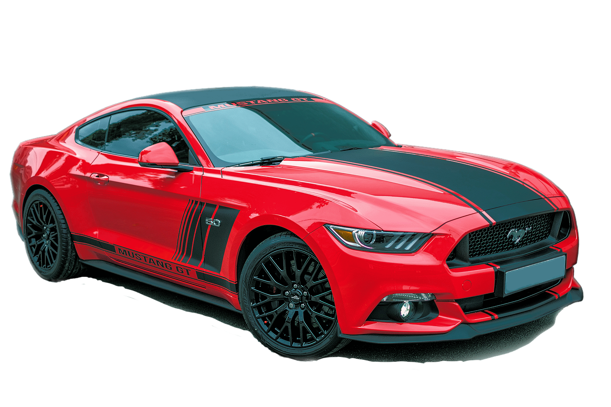
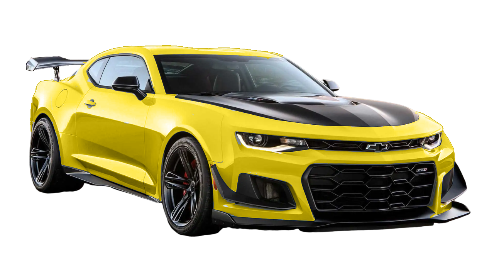
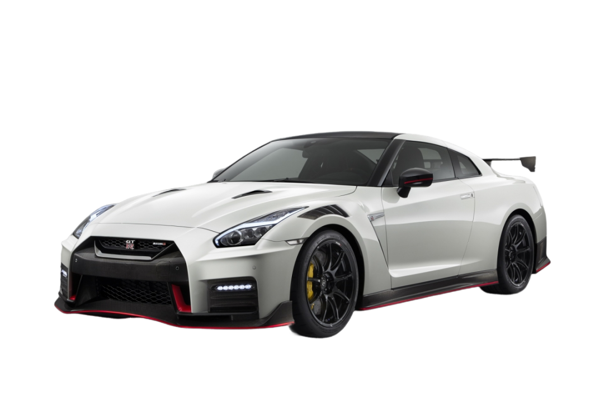
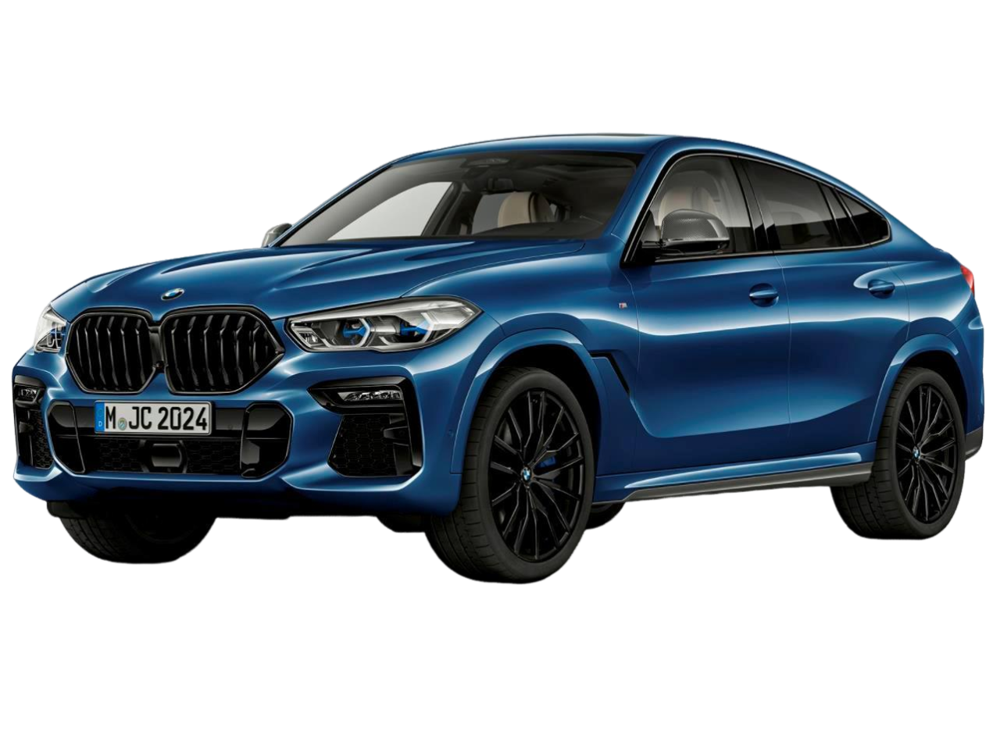
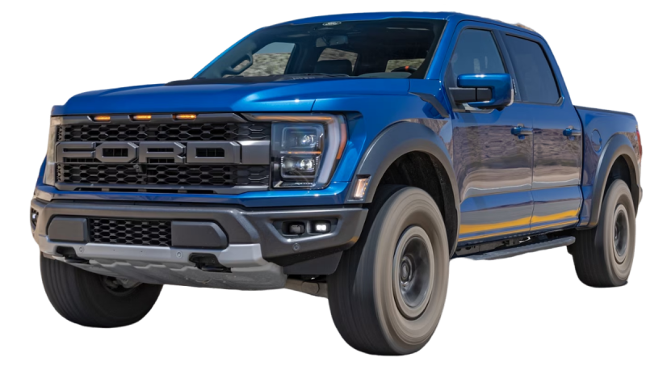

O Lamborghini Huracán é um automóvel desportivo construído pela empresa italiana Lamborghini, substituindo o lendário Gallardo, uns dos carros mais bem sucedidos da história da companhia. Como é tradição na marca Lamborghini, o nome Huracán surgiu do lendário touro de lide indultado na praça Real Maestranza de Sevilla.

0 Km
Ferrari 485
A Ferrari 458 Italia é um modelo esportivo produzido pela Ferrari. Suas primeiras fotos foram divulgadas pela Ferrari em 28 de julho de 2009 e foi apresentado ao público no Salão do Automóvel de Frankfurt em setembro do mesmo ano. É o sucessor do Ferrari F430 e em 2015 foi substituído pelo Ferrari 488 GTB, que foi revelado no Salão Internacional do Automóvel de Genebra em março de 2015.

5.000 Km Único Dono
Porsche 911 Turbo
O Porsche 911 (chamado por vezes também de Porsche 911 Carrera) é um carro desportivo produzido pela alemã Porsche AG de Stuttgart, Alemanha desde 1964. O modelo está em constante evolução desde seu lançamento em 1963 no Salão de Frankfurt, com o nome de 901.Mecanicamente ele se destaca por ter motor traseiro e até o modelo 993, em 1998, refrigeração a ar. Na realidade, apenas a versão Turbo da família 993 continuou com o motor arrefecido a ar por mais um ano, depois que, em meados de 1997, na chamada família 996, o motor de aspiração natural das demais versões foi substituído por outro com arrefecimento a líquido, mantida a arquitetura 6-cilindros boxer.

30.000 KM
Ford Mustang
O Ford Mustang é um automóvel desportivo produzido pela Ford Motor Company. O carro foi apresentado ao público em 17 de abril de 1964 durante a New York World's Fair. O Mustang, apesar de ter sofrido grandes alterações ao longo dos anos é a mais antiga linha de automóveis da Ford, cujo nome se inspira na única raça de cavalo selvagem do país. Foi o primeiro "Muscle Car" da história, sendo seguido anos mais tarde por modelos concorrentes inspirados claramente nele.

42.500 Km
Camaro Zl1
O Camaro é um coupé esportivo de porte médio da Chevrolet. Produzido desde 1966, trata-se de muscle car que seria a resposta da General Motors ao Ford Mustang, de 1964. Sua produção foi interrompida em 2002, mas a General Motors retomou a produção de uma nova versão em 2009. A década de 1970 não foi proveitosa para o Camaro: a subida do preço do petróleo fez o consumidor optar por veículos que consumiam menos. Medidas antipoluição fizeram acabar com os grandes V8 e em 1972 o fim da produção do SS e em 1973 o surgimento do Camaro LT privilegiando mais o luxo e o conforto e menos a potência, dando lugar inclusive aos motores 6 cilindros em linha, menos potentes e mais econômicos. A crise faz outra "vítima" em 74, terminando com o Z28.

0 Km
Nissan GTR
O Nissan GT-R é um modelo de automóvel superesportivo produzido pela Nissan, foi anunciado em 2001 com o objectivo de dar sequencia a marca GT-R (que surgiu na década de 1960 que fez sucesso com o Skyline), em 6 de Dezembro de 2007 foi oficialmente lançado no Japão, em 2008 chegou aos Estados Unidos, Canadá e Portugal, no resto do mundo apenas em 2009. O modelo 2007 possui um motor 3.8 V6 Biturbo com potência de 480Cv (362 kW) e 59.95Kgfm (588,0N.m.) de torque, acoplado a uma transmissão automatizada de 6 marchas com dupla embreagem e sistema de tração AWD ATTESA E-TS®, esse conjunto fornece desempenho capaz de levar os 1740Kg de 0–100 km/h em 2.7s e tem velocidade máxima de 385 à 395 km/h.

80.000 Km
BMW X6
O BMW X6 é um SUV crossover de luxo de médio porte da montadora alemã BMW . O BMW X6 é o criador do cupê de atividade esportiva (SAC), fazendo referência ao design inclinado do teto traseiro. Ele combina os atributos de um SUV (grande distância ao solo, tração nas quatro rodas e capacidade para qualquer clima, rodas e pneus grandes) com a postura de um coupé (estilo com teto inclinado). Ele é construído na fábrica norte-americana da BMW em Greer, Carolina do Sul, ao lado do BMW X5 , cuja plataforma compartilha. Antes do lançamento do X7 , o X6 era considerado um SUV carro-chefe da BMW.

60.000 Km
Ford Raptor F150
O Raptor é uma placa de identificação usada pela Ford para suas picapes e SUVs de "alto desempenho" . Em uso desde o ano modelo de 2010, o Raptor é designado como a versão de maior desempenho do F-150 , Ranger e Bronco . Tirando seu nome da ave de rapina e do velociraptor , a linha de modelos pretende ser uma contraparte legal de rua de um caminhão-troféu de corrida off-road . O F-150 Raptor está atualmente em sua terceira geração; o Ranger Raptor foi lançado em 2019 (em mercados fora da América do Norte), enquanto o Bronco Raptor foi lançado no final de 2021.